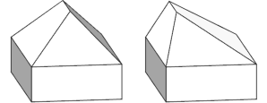
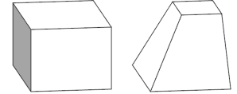
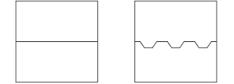
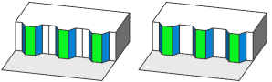
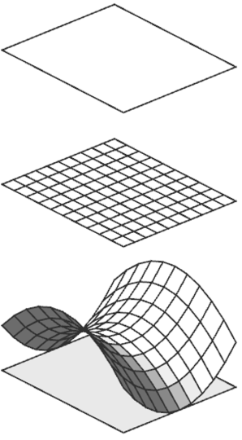
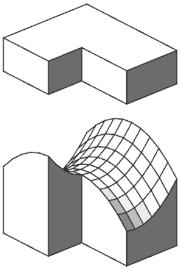
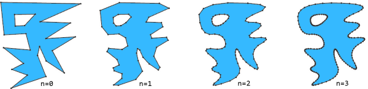
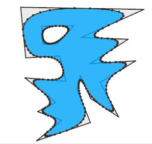

modify operation
component, scopeAlignment, selector, operator, operations These parameters are the same as for the comp operation.
The modify operation edits selected parts of the current geometry. Like the comp operation, it divides a shape into topological components (defined by component, selector, operator) that result in new shapes that are modified according to the specified operations.
Unlike the comp operation, the modify operation always performs shape recomposition implicitly (see Shape Recomposition), i.e., recombining the edited components with the remaining geometry. For face components, the following two lines are therefore equivalent:
- modify(f) { ... }
- inline(recompose) comp(f) { ... | all: X. }
In contrast to an inlined comp operation, modify automatically restores the untouched geometry, removing the need for the | all: X. clause. It also enables modifying edge and vertex components while returning to the full geometry after the operation.
Comp shape attributes
Each generated shape has a number of comp shape attributes set. For more information see comp attribute.
Related
Examples
Modified Roof Ridge

Init -->
extrude(5)
comp(f) { top: ModifiedRoof | side: Facade. }
ModifiedRoof -->
roofHip(45)
modify(e) { ridge: t(0,2,0) X. }
The ridge of the roof is moved 2 meters to the side.
Tapered Mass

Init -->
extrude(5)
modify(f) { top: s('0.5, '0.5, '0.5) X. }
The top of an extruded mass is rescaled to create slanted facades.
Corrugated Facade

const OpeningL = 2
const Depth = 0.75
const InnerL = 1
Init -->
inline(recompose) split(x) { 5: tag("Front") F.
| ~1: tag("House") H. }
modify(e) { isTagged("Front") && isTagged("House"):
split(x) { ~4: CreateOutset }* }
CreateOutset -->
split(x) { ~1 : Wall.
| 0.01 : tag("Side") Side.
| OpeningL: tag("Outset") Outset
| 0.01 : tag("Side") Side.
| ~1 : Wall. }
Outset --> t(0,-Depth,0) s(InnerL,0,0) center(x)
The input shape is first divided into the house and front footprint, tagged, and recombined using inline(recompose). The connecting edge is then modified and split into repeated outsets. Each outset is built by subdividing the edge, tagging reference parts, and transforming the center segment. Shape recomposition automatically merges the modified edges with the footprints, producing the corrugated pattern.

Init -->
...
comp(f) { isTagged("House"): BuildHouse }
BuildHouse -->
extrude(3)
cleanupGeometry(all,0)
comp(f) { isTagged("Side") : Blue
| isTagged("Outset"): Green
| all = White. }
Blue --> color("#0399F5")
Green --> color("#09DE1F")
The extrude operation automatically propagates the previously applied edge tags to the corresponding facades. The tags are used to color the facades. The cleanupGeometry operation is used to merge adjacent coplanar wall polygons.
Hyperbolic Grid

attr Max_Height = scope.sx/2
Paraboloid with(
center := getPivotCoord(scope.sx/2, 0, scope.sz/2)
cenX := center[0]
cenZ := center[2]
a := getDampingFac(scope.sx/2)
b := getDampingFac(scope.sz/2)
yPos := scope.ty
)-->
inline(recompose) Grid
modify(v, noAlign) { all: Move(cenX, cenZ, a, b) }
set(scope.ty, yPos)
Grid -->
split(x,noAdjust) { '0.1: split(z) { '0.1: Cell. }* }*
Move(centerX, centerZ, a, b) with(
x := scope.tx - centerX
z := scope.tz - centerZ
)-->
t(0,hyperbolic(x,z,a,b),0)
hyperbolic(x,z,a,b) = (z*z)/(b*b) - (x*x)/(a*a)
getPivotCoord(x,y,z) = convert(scope,pivot,pos,[x,y,z])
getDampingFac(l) = l / sqrt(Max_Height*0.5)
The example first splits the input shape into a 10x10 grid using inline(recompose). Then, each vertex is moved to create a hyperbolic surface. Finally, scope.ty is set back to its original value to ensure the new shape is fully above the input shape.
The rule uses the Max_Height attribute to control the height of the hyperbolic surface, preventing the quadratic function from exploding on large input shapes.
The noAlign parameter ensures that all vertex scopes share the same coordinate system. It keeps the original pivot, so each vertex's scope remains relative to that reference, allowing its position to be read directly from the scope translation.
Hyperbolic Roof

Init -->
extrude(5)
modify(f,noAlign) { top: Paraboloid }
The Paraboloid rule can be used directly to modify the top of an extruded mass.
Chaikin's Corner Cutting Algorithm


Init -->
ChaikinSmoothing(3)
ChaikinSmoothing(n) -->
case n > 0:
modify(fe) { all: SplitEdge }
modify(fe) { isTagged("Collapse"): s(0,0,0) X. }
cleanupGeometry(vertices,0)
ChaikinSmoothing(n-1)
else:
Done.
SplitEdge -->
split(x) { '0.25: CornerCut.
| ~1: Fixed.
| '0.25: tag("Collapse") Collapse. }
This example implements Chaikin's corner cutting algorithm to smooth the polygon boundary. Each iteration splits every edge into three parts and collapses the last segment. By collapsing the end of each edge, the start of the following edge is also collapsed, gradually cutting the corners and producing an even smoothing effect.
The cleanupGeometry operation merges the vertices of the collapsed edge.